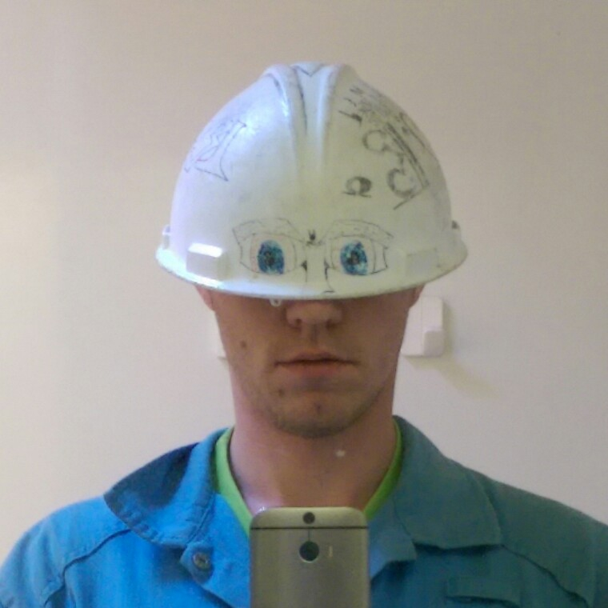

Kijk dit ben ik: Robin Stam,
geboren op een koude nacht 10 februari 1989
jeugd door gebracht in Groningen, voornamelijk met:
Zoals je ziet staat studeren er niet bij
dat is iets wat ik in mijn latere leeftijd heb leren waarderen